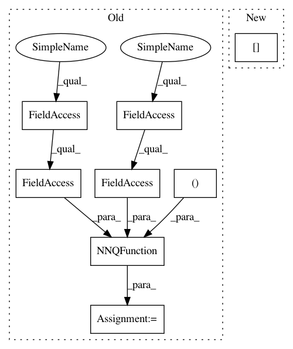

7856d22b09561e33522bdc0bd00218ae75b84bd7,examples/mujoco_all_sac.py,,run_experiment,#Any#,31
Before Change
base_kwargs = dict(algorithm_params["base_kwargs"], sampler=sampler)
M = value_fn_params["layer_size"]
qf1 = NNQFunction(
observation_shape=env.observation_space.shape,
action_shape=env.action_space.shape,
hidden_layer_sizes=(M, M),
name="qf1")
qf2 = NNQFunction(
observation_shape=env.observation_space.shape,
action_shape=env.action_space.shape,
hidden_layer_sizes=(M, M),
After Change
squash=policy_params["squash"],
bijector_config=bijector_config,
reparameterize=policy_params["reparameterize"],
q_function=q_functions[0],
observations_preprocessor=preprocessor)
elif policy_params["type"] == "gmm":
assert not policy_params["reparameterize"], (
In pattern: SUPERPATTERN
Frequency: 3
Non-data size: 8
Instances
Project Name: rail-berkeley/softlearning
Commit Name: 7856d22b09561e33522bdc0bd00218ae75b84bd7
Time: 2018-09-09
Author: kristian.hartikainen@gmail.com
File Name: examples/mujoco_all_sac.py
Class Name:
Method Name: run_experiment
Project Name: rail-berkeley/softlearning
Commit Name: 7856d22b09561e33522bdc0bd00218ae75b84bd7
Time: 2018-09-09
Author: kristian.hartikainen@gmail.com
File Name: examples/mujoco_all_ray.py
Class Name:
Method Name: run_experiment
Project Name: rail-berkeley/softlearning
Commit Name: 7856d22b09561e33522bdc0bd00218ae75b84bd7
Time: 2018-09-09
Author: kristian.hartikainen@gmail.com
File Name: examples/mujoco_all_sac.py
Class Name:
Method Name: run_experiment
Project Name: rail-berkeley/softlearning
Commit Name: 8e6fc06cc156510d37decf430cf3df0853285779
Time: 2018-10-19
Author: hartikainen@berkeley.edu
File Name: softlearning/value_functions/utils.py
Class Name:
Method Name: get_Q_function_from_variant